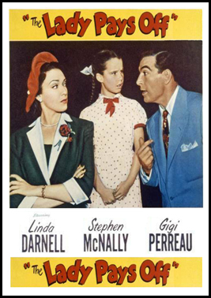
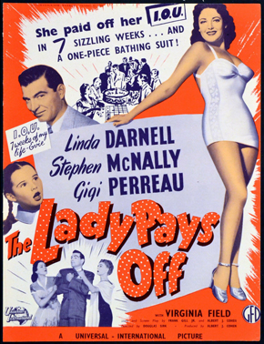
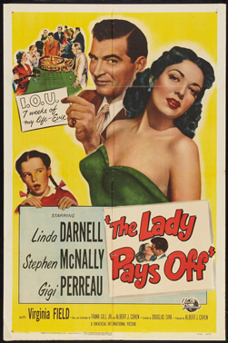

The Lady Pays Off
Linda Darnell
Virginia Field
Nestor Paiva
Katherine Warren
Paul McVey
Nolan Leary
Ric Roman
SYNOPSIS
Evelyn Walsh Warren is named Teacher of the Year and her photo is on the cover of Time magazine, but she is dissatisfied with her uneventful life. That changes when she goes to Reno and inadvertently loses $7,000 at the roulette table, mistaking $100 chips for $1 ones. Casino owner Matt Braddock offers her a deal: He will tear up her IOU if she finds out what is wrong with his nine-year-old daughter Diane, who is moping around, not eating and having nightmares.
Diane and Evelyn get along well after a few initial setbacks and Diane then sets about getting Evelyn and her father to fall in love with each other.
TV Guide panned the film, stating "The unbelievable and obvious plot is further hampered by the miscasting of Darnell. Though he directed the film smoothly, Sirk has been quoted as saying he '[had] no feeling for this picture at all,' which is obvious in the final product".


